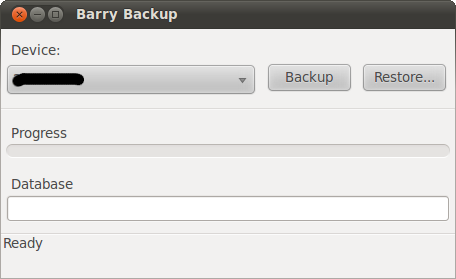

Ja, moja jeżyna i ja
Jakiś czas temu stałem się szczęśliwym posiadaczem BlackBerry 9000 Bold. Sprzęt chociaż używany zakupiony został dość tanio i od zaufanej osoby, dlatego było warto. Z samego terminala jak i systemu BlackBerry OS jestem bardzo zadowolony. Duży czytelny wyświetlacz o rozdzielczości 480×320, baaardzo wygodna klawiatura na której da się szybko pisać teksty dłuższe niż smsy, do tego moduł WiFi, GPS, aparat który robi przyzwoite zdjęcia i mocna bateria sprawiają, że jest to naprawdę super telefon. Zamieniłbym go tylko na nowszy model Bolda ;)
Pełna specyfikacja telefonu:
| OGÓLNE | |
| System | GSM850, GSM 900, GSM1800, GSM1900, WCDMA |
| Wysokość (mm) | 114 |
| Szerokość (mm) | 66 |
| Grubość (mm) | 14 |
| Waga (g) | 133 |
| Akumulator | litowo-jonowy (LiIon) |
| Akumulator (mAh) | 1500 |
| Czas czuwania wg producenta (h) | 310 |
| Czas rozmów wg producenta (min) | 300 |
| Wyświetlacz | 65 tys. kolorów |
| Wyświetlacz (param.) | 480 x 320 |
| Dostępna pamięć (MB) | 1024, 128 MB RAM |
| Złącze kart pamięci | microSD |
| DANE | |
| Bluetooth | Tak |
| CSD | Tak |
| HSCSD | Nie |
| GPRS | Class 10 |
| EDGE | Class 10 |
| WiFI | 802.11a/b/g |
| WAP | 2.0 |
| Aparat fotograficzny | Tak |
| Aparat fotograficzny (param.) | 2 Mpix |
| PDA (param.) | Blackberry OS 4.6, 624 MHz – niebawem napiszę jak zaktualizować soft do najnowszej wersji 5.x.x |
| DODATKOWE INFORMACJE | |
| Opis |
|
Danie dnia: pingwin z jeżynami
Danie to ma wyrafinowany smak, więc mało komu smakuje. Mi osobiście smakuje, pewnie dlatego że lubię proste potrawy ;). Chodzi mi oczywiście o obsługę terminali BlackBerry pod Linuxem która to ma się całkiem dobrze za sprawą programu Barry (szerzej o Barry i jego obsłudze niebawem na blogu :>). Za pomocą tej aplikacji można robić kopie danych z urządzenia, instalować aplikację Java, synchronizować kalendarz i kontakty za pomocą OpenSync, używać BlackBerry jako modem i wiele innych. Sam półki co korzystam tylko z jednej jego funkcjonalności, mianowicie robię kopie zapasowe (tak nawiasem to chyba muszę sprawdzić czy umie te kopie przywracać, na co komu kopia której nie można przywrócić? :D). Dlaczego tylko z jednej funkcji korzystam? Bo kontakty, kalendarz i zadania synchronizuję z chmurą Google. Tak wiem, Google evil i takie tam, ale mi to odpowiada i jest bardzo wygodne. Kto używa ten docenia możliwość posiadania tych samych danych w telefonie, laptopie, komputerze w pracy i na wszystkich innych komputerach z przeglądarką www i dostępem do Internetu. Większość funkcjio Barry obsługuje się z konsoli, dlatego poniżej tylko jeden zrzut z barrybackup.

Gruszka z wąsem
Moim operatorem jest Play. Jak większość użytkowników BlackBerry wie sieć ta nie udostępnia swoim abonentom usług BlackBerry. Tak, BlackBerry to nie tylko terminale ale i usługa. Na myśli mam BIS czyli BlackBerry Internet Service, jest to usługa dająca dostęp do emaila, komunikatora BlackBerry, darmowych wiadomości PIN (między użytkownikami “jeżyn”), map BlackBerry oraz dostęp do Internetu. Wiele aplikacji pisanych na BlackBerry do łączenia się z Internetem wykorzystuje właśnie BIS. Bez tej usługi da się żyć, jednak nie wykorzystuję się w pełni możliwości terminala. Gruszka z wąsem obiecał, że w tym miesiącu usługi BlackBerry zostaną uruchomione w sieci Play. Czy będą to gruszki na wierzbie czy śliwki na sośnie, zobaczymy.
In App World, alone
Wprawdzie aplikacji dostępnych w Blackberry App World jest “tylko” 10000 to ilość ta sprawia, że każdy znajdzie coś dla siebie. W poprzednim zdaniu napisałem “tylko” bo dla porównania w Apple App Store (iOS) jest 250000 aplikacji, w Android Market (Android) 10000, Nokia Ovi Store (Symbian) 20000 a w SamsungApps (Bada OS) 1000 aplikacji (przybliżone dane z września 2010). Po niżej przedstawię spis aplikacji które mam zainstalowane w swoim terminalu i z których korzystam częściej lub rzadziej. Nie jest to ostateczna lista, pewnie kiedy będę miał już BIS nastąpią pewne roszady, po za tym wciąż szukam nowych ciekawych aplikacji, ale o tym niżej. ;) Oczywiście aplikacji dostępnych razem z systemem nie będę wymieniał.
- Opera Mini
- BeejiveIM
- Gmail
- Google Maps
- Dropbox
- WordPress
- Allegro
- Meebo
- Evernote
- Tumblr
- Google Sync
- BBNotePad
- BeamExplorer
Opera chociaż jest dobrą przeglądarką to na rynku przeglądarek dla komputerów biurkowych jakoś wybić się nie może, jednak na rynku przeglądarek mobilnych nie ma sobie równych. Po prostu jest najlepsza. Opera Mini 5 pozwala na wygodne przeglądanie stron również tych przeznaczonych dla dużych przeglądarek. Przeglądarka systemowa jest bardzo dobra, jednak przyzwyczajenie do Opery Mini robi swoje, wbudowanej przeglądarki używam tylko kiedy przeglądam strony łącząc się z siecią za pomocą WiFi. Oto główne funkcjonalności Opery Mini:
- Przeglądanie stron w kartach
- Synchronizacja zakładek z “dużą” Operą przez Opera Link
- Kompresowanie stron przez serwery Proxy Opery, co pozwala zaoszczędzić transfer
- Zapisywanie stron do przeglądania ich w offline
- Menedżer haseł
- Sugerowanie adresów strony
- Ściąganie i wysyłanie plików
BeejiveIM jest bardzo przyjazny użytkownikom, prosty w obsługe, przy czym posiada wszystkie niezbęde funkcjonalności. Jest dobrze zintegrowany z BlackBerry OS, może być zawsze uruchomiony w tle, a o nowych wiadomościach powiadamia dźwiękiem oraz ikonką w “zasobniku”. Chociaż BeejiveIM jest multikomunikatorem, bo potrafi obsługiwać AIM/iChat/MobileMe, MSN/Windows Live, Yahoo!, Facebook Chat, MySpace, GoogleTalk, ICQ i Jabbera ja korzystam tylko z tej ostatniej sieci.
- Dobra integrazja z Blackberry OS
- Obsługa GPS – wysyłanie lokalizacji do znajomych
- Wysyłania zdjęć i nagrań audio
- Duża możliwość zmiany wyglądu poprzez skórki i zmianę ich koloru/tapet
- Niestety aplikacja nie jest darmowa, jej cena wynosi $10 – warta swojej ceny
Tej usługi przedstawiać nikomu nie trzeba. Gmail dla BlackBerry jest aplikacją ze stajni Google. Jest to bardzo przydatna aplikacja, pozwala być na czasie ze swoimi majlami i kontaktami. Nowe wiadomości pojawiają się niemal natychmiast, a aplikacja powiadamia o tym dźwiękiem i ikonka. Sama aplikacja nie zużywa dużo transferu i może być zawsze uruchomiona w tle. Niewątpliwą wadą tej aplikacji jest fakt iż do pisanego majla nie można dodać załączników. Chociaż jestem zadowolony z niej to dni tego programu na moim terminalu są policzone. Gdy tylko Play uruchomi BIS zostanie zastąpiona ona przez Enhanced Gmail Plug-In.
Tak jak w przypadku Gmail również i tej usługi przedstawiać nikomu nie trzeba. Moim zdaniem jest ro przydatna rzecz nie tylko w podróży pomoże znaleźć interesujące miejsce czy dany adres lub chociażby określić odległość jaka dzieli nas do punktu docelowego. Google Maps w telefonie może działać jako prosta nawigacja samochodowa. Posiada również wbudowaną usługę Latitude (którą oczywiście można wyłączyć), dzięki Latitude można informować znajomych o swoim położeniu i sprawdzać gdzie oni aktualnie znajdują się. Google Maps mam dość często uruchomioną w tle, równie często program wywala się i należy zrestartować go, niestety nie wiem czym to spowodowane jest.
Usługa ta polega na przechowywaniu swoich zdjęć i plików w chmurze Dropbox. Ma to swoje zalety bo w łatwy, niemal bezobsługowy sposób możemy synchronizować ważne dla nas pliki między wszystkimi posiadanymi komputerami i innymi urządzeniami. Nie jestem jakimś Dropboxowym pyrusem, mam na nim niewiele plików i używam go dość rzadko, jednak kiedy uruchomiłem go na swoim BlackBerry zaszokowała mnie jedna rzecz, która szokuje mnie do dzisiaj. Mianowicie program obsługuje tylko pliki graficzne, więc do swojego Dropboxa można za pomocą BlackBerry można wysyłać tylko zdjęcia. o_0 Jeśli nie masz Dropboxa to zarejestruj się. :)
Wydaje się, że każdy posiadacz bloga opartego na WordPress i użytkownik terminala BlackBerry powinien mieć tą aplikację. Za pośrednictwem WordPress dla BlackBerry można pisać i publikować posty załączając do nich nagrania audio, wideo i zdjęcia. Aplikacja wykorzystuje też GPS dzięki czemu do postów można dołączać lokalizację w której aktualnie znajdujemy się. Można również przeglądać i edytować już istniejące posty i komentarze jak również odpowiadać na komentarze. Jeśli aplikację zostawimy uruchomioną w tle powiadomi o nowych komentarzach.
Użytkownicy iOS i Androida już dawno doczekali się oficjalnych aplikacji do obsługi Allegro ze swoich urządzeń, posiadacze BlackBerry musieli czekać dłużej ale doczekali się. Aplikacja zapewnia podstawową i moim zdaniem wystarczającą funkcjonalność: obserwowanie aukcji, zakup przedmiotów, ci zarządzanie własnymi aukcjami. Wielu ucieszy pewnie fakt, że do połączenia z internetem może być wykorzystany punkt dostępowy APN: blackberry.net. Ostatnio trochę handluję na Allegro i jest to dla mnie aplikacja must have.
Jest to multikomunikator internetowy, mi znany bardziej dzięki jego wersji działającej na stronie internetowej. Meebo bazuje na wolnej i otwartej bibliotece libpurple stworzonej przez deweloperów Pidgina. Obsługuje następujące sieci: Yahoo! Messenger, Windows Live Messenger, Google Talk, AOL Instant Messenger, ICQ, MySpaceIM, Facebook Chat i Jabber. Aplikacja jest łatwa w użytkowaniu, korzystałem z niej zanim poznałem BeejiveIM.
Notowanie ważnych rzeczy jest potrzebne aby o nich nie zapomnieć. Wcześniej używałem Gnote ale brak dostępu do notatek z innych maszyn i telefonu spowodował, że zamieniłem go na Google Netbook. Aktualnie do zapisywania notatek zarówno na komputerach poprzez wtyczkę do Chromium jak i za pomocą aplikacji w telefonie używam Evernote. Evernote jest zestawem oprogramowania na różne platformy i usługą która pozwala na tworzenie i archiwizację notatek, zarówno tekstowych jak i głosowych. Do notatek można załączać zdjęcia oraz informację o położeniu które to program wychwytuje za pomocą GPS. Posiadam bezpłatną wersję tej usługi która ma ograniczony do 60 MB miesięczny transfer danych oraz mniejszą pojemność na notatki. Dla moich potrzeb w zupełności wystarcza.
Na świecie jak i również w Polsce coraz bardziej popularne stają się serwisy które umożliwiają tak zwane mikroblogowanie. Większość ludzi dostrzegło potencjał płynący z tych platform. Dzięki nim można łatwo można śledzić poczynania znajomych jak i informacje, jak również dzielić się linkami, zdjęciami, filmami czy przemyśleniami. Chyba większość osób zna Twittera. Istnieją również inne popularne platformy posiadające ciekawe funkcjonalności. Jednym z takich serwisów jest Tumblr. Aplikacja Tumblr dla Blackberry wpełni wykorzystuje potencjał samej platformy Tumblr jak i możliwości terminala. Można pisać posty czy publikować zdjęcia, filmy i nagrania audio już istniejące lub wykonywane bezpośrednio z poziomu aplikacji. Program potrafi również korzystać z połączenia poprzez WiFi, BIS. BES, TCP i WAP2 co jest jego niewątpliwą zaletą. Użytkowanie aplikacji jest bardzo przyjemne, za jej pośrednictwem prowadzę Zapiski z terminala… (jednak NIE WARTO tam zaglądać :>). Przy okazji samego Tumblr warto wspomnieć o znakomitej desktopowej aplikacji dla Linuxa o nazwie Grumblr.
Usługa oraz aplikacja Google Sync umożliwia synchronizowania danych między terminalem BlackBerry a kontem w chmurze Google. automatycznie lub manualnie synchronizuje kontakty lub/i kalendarz.
Mały i prosty program dający możliwość tworzenia i edycji plików tekstowych. Nic dodać nic ująć ;)
Manager plików pozwalający przeglądać pamięć urządzenia i kartę pamięci, przeglądane pliki i katalogi wyświetlane są w formie drzewa. Aplikacja pozwala na tworzenie i rozpakowywanie archiwów ZIP, oczywiście pozwala też kopiować i przenosić pliki. Prosty program ale przydatny.
Moja jeżyna
Jakie Ty aplikację używasz? Podziel się tym w komentarzu. :)
Foto Blackberry RIM, foto jeżynek Shona Leah@Flickr, specyfikacja telefonu telepolis.pl, foto Play niemachujawewsi.jogger.pl


5 marca, 2011 at 18:26
Nie no, :P nie pasujemy :P
5 marca, 2011 at 18:41
Telefon z Androidem chętnie bym miał, ale jako drugi ;D
5 marca, 2011 at 21:38
A jako trzeci z WP7? :p
5 marca, 2011 at 22:05
matka wie, że ćpiesz? :D
5 marca, 2011 at 22:09
Hehe nie mogę, dziwny zbieg okoliczności, także jestem posiadaczem tej jeżynki, też mam w play, używam prawie wszystkich tych samych aplikacji i kurcze nie mogę tego pojąć że mam też taką samą tapetę ustawioną ^^.
Fajny wpis, nie wiedziałem o aplikacji pod pingwina, dzięki wielkie zaraz wypróbuje :P.
5 marca, 2011 at 23:48
Bracie? xD
7 marca, 2011 at 17:42
Poprawiłeś błędy? xD
7 marca, 2011 at 18:16
Cicho :D chciałbyś dostać zajęcie i pracować no profit jako korektor? ;)
15 marca, 2011 at 0:50
twoje błędy sprawdzam tylko w pociągu popijając piwo :P
27 marca, 2011 at 23:32
BB i Arch (z tego co widze na zapiskach z terminala ;))
takie połączenie jak u mnie – najlepsze połączenie :P
28 marca, 2011 at 0:21
Debian jeszcze jako główny os, nie miałem czasu aby do końca zainstalować wszystko i ustawić :]
23 maja, 2011 at 23:15
wszystko fajnie tylko jak u licha właczyć mapy google mam je wgrane ale nie odpalaja , mam 9000 na karte w playu i u licha czy w plau na karte ( bez Bis )działa wszystko tzn mail mms, google map i net ?
co wpisac w AP ?
ps. pomocy
1ericking@wp.pl
23 maja, 2011 at 23:38
Aby działały Ci mmsy i wap musisz skorzystać z tego tutka http://www.nibyblog.pl/bez-bis-da-sie-zyc-jak-ust…
W opcjach zaawansowanych w ustawieniach TCP/IP jako APN musisz wpisać: internet – dzięki temu aplikację takie jak Opera mini czy Google Maps będą miały łączność z netem
Wbudowany klient poczty nie działa bez Bis, ale można go zastąpić na przykład aplikacją Gmaila i emaile również przychodzą "w push"
Wszystko działa w Play na kartę, mam i używam.
29 maja, 2011 at 15:57
Sorry Winnetou -_-